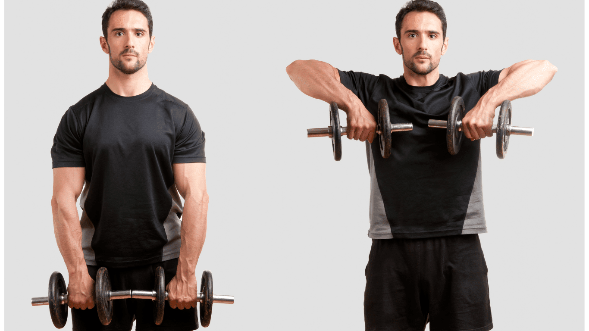

Front Shoulder Workouts
Front Dumbbell Raises

Front dumbbell raises are great for isolating the front part of your shoulders. They also engage the upper chest and triceps to some extent.
Movement Category: Isolation
Programming: 3-4 sets of 10-15 repetitions
Weight: Use a weight that allows you to complete the set with proper form.
To do front dumbbell raises:
- Stand with your feet shoulder-width apart, holding a dumbbell in each hand with your arms extended down at your sides.
- Raise one dumbbell in front of you to shoulder height while keeping your arm straight but not locked out.
- Lower the dumbbell back to the starting position and repeat with the other arm.
- Alternate arms for the desired number of repetitions.
Watch Demonstration
Arnold Press

The Arnold press is named after Arnold Schwarzenegger. This exercise targets the front and middle parts of the shoulders and adds a twist for greater muscle engagement.
Movement Category: Compound
Programming: 3-4 sets of 8-12 repetitions
Weight: Use a weight that challenges you while maintaining proper form.
To do an Arnold press:
- Sit on a bench with a back support, holding a dumbbell in each hand at shoulder height, palms facing your body.
- Press the dumbbells overhead while rotating your palms outward so that they face forward at the top of the movement.
- Lower the dumbbells back to the starting position while rotating your palms back towards your body.
- Repeat for the desired number of repetitions.
Watch Demonstration
Military Press

The military press is a powerful exercise that targets the front shoulders and engages the entire upper body, including the core for stability.
Movement Category: Compound
Programming: 3-4 sets of 6-10 repetitions
Weight: Use a weight that allows you to complete the set with proper form.
To do a military press:
- Stand with your feet shoulder-width apart, holding a barbell at shoulder height with your palms facing forward.
- Press the barbell overhead until your arms are fully extended, without locking out your elbows.
- Lower the barbell back to the starting position.
- Repeat for the desired number of repetitions.
Watch Demonstration
Front Plate Raises

Front plate raises focus on the anterior deltoids and help in building shoulder strength and definition.
Movement Category: Isolation
Programming: 3-4 sets of 10-15 repetitions
Weight: Use a weight plate that allows you to maintain proper form.
To do front plate raises:
- Stand with your feet shoulder-width apart, holding a weight plate with both hands at the 3 and 9 o'clock positions.
- Raise the plate in front of you to shoulder height, keeping your arms straight but not locked out.
- Lower the plate back to the starting position.
- Repeat for the desired number of repetitions.
Watch Demonstration
Middle Shoulder Workouts
Lateral Raises

Lateral raises are excellent for targeting the middle part of the shoulders, creating width and definition.
Movement Category: Isolation
Programming: 3-4 sets of 10-15 repetitions
Weight: Use a light to moderate weight that allows you to maintain control throughout the exercise.
To do lateral raises:
- Stand with your feet shoulder-width apart, holding a dumbbell in each hand at your sides with your palms facing inwards.
- Raise your arms out to the sides until they are at shoulder height, keeping a slight bend in your elbows.
- Lower your arms back to the starting position.
- Repeat for the desired number of repetitions.
Watch Demonstration
Cable Lateral Raises

Cable lateral raises provide constant tension on the middle deltoids, making them highly effective for shoulder development.
Movement Category: Isolation
Programming: 3-4 sets of 10-15 repetitions
Weight: Use a weight that allows you to maintain control throughout the exercise.
To do cable lateral raises:
- Stand next to a cable machine, with the handle attachment set at the lowest position.
- Hold the handle with the hand farthest from the machine, keeping your arm straight.
- Raise your arm out to the side until it reaches shoulder height.
- Lower your arm back to the starting position.
- Repeat for the desired number of repetitions, then switch sides.
Watch Demonstration
Dumbbell Upright Rows

Dumbbell upright rows target the middle shoulders and traps, contributing to overall shoulder mass and definition.
Movement Category: Compound
Programming: 3-4 sets of 8-12 repetitions
Weight: Use a weight that allows you to complete the set with proper form.
To do dumbbell upright rows:
- Stand with your feet shoulder-width apart, holding a dumbbell in each hand with your palms facing your thighs.
- Lift the dumbbells straight up towards your chin, keeping them close to your body.
- Lower the dumbbells back to the starting position.
- Repeat for the desired number of repetitions.
Watch Demonstration
Bent-Over Lateral Raises

Bent-over lateral raises primarily target the middle and rear deltoids, contributing to a well-rounded shoulder appearance.
Movement Category: Isolation
Programming: 3-4 sets of 10-15 repetitions
Weight: Use a light to moderate weight that allows you to maintain control throughout the exercise.
To do bent-over lateral raises:
- Stand with your feet shoulder-width apart, holding a dumbbell in each hand.
- Bend at the hips until your torso is nearly parallel to the ground, with a slight bend in your knees.
- Raise your arms out to the sides until they reach shoulder height, keeping a slight bend in your elbows.
- Lower your arms back to the starting position.
- Repeat for the desired number of repetitions.
Watch Demonstration
Rear Shoulder Workouts
Face Pulls

Face pulls are excellent for targeting the rear deltoids, as well as the upper back and traps.
Movement Category: Isolation
Programming: 3-4 sets of 12-15 repetitions
Weight: Use a light to moderate weight that allows you to maintain proper form.
To do face pulls:
- Stand facing a cable machine with a rope attachment set at upper chest height.
- Grasp the rope with both hands, palms facing inwards.
- Pull the rope towards your face, flaring your elbows out to the sides.
- Pause briefly when the rope is at face level, then slowly return to the starting position.
- Repeat for the desired number of repetitions.
Watch Demonstration
Reverse Pec Deck Flyes

Reverse pec deck flyes effectively isolate the rear deltoids, providing a great workout for the back of the shoulders.
Movement Category: Isolation
Programming: 3-4 sets of 12-15 repetitions
Weight: Use a light to moderate weight that allows you to maintain control throughout the exercise.
To do reverse pec deck flyes:
- Sit on the pec deck machine facing the pads, with your chest against the backrest.
- Grasp the handles with your palms facing downwards.
- Push the handles outwards and backwards, squeezing your shoulder blades together.
- Slowly return to the starting position.
- Repeat for the desired number of repetitions.
Watch Demonstration
Bent-Over Dumbbell Rows

Bent-over dumbbell rows target the rear deltoids, as well as the upper back and lats, contributing to overall shoulder and back development.
Movement Category: Compound
Programming: 3-4 sets of 8-12 repetitions
Weight: Use a weight that allows you to complete the set with proper form.
To do bent-over dumbbell rows:
- Stand with your feet shoulder-width apart, holding a dumbbell in each hand.
- Bend at the hips until your torso is nearly parallel to the ground, with a slight bend in your knees.
- Pull the dumbbells towards your torso, keeping your elbows close to your body.
- Lower the dumbbells back to the starting position.
- Repeat for the desired number of repetitions.
Watch Demonstration
Rear Delt Flyes

Rear delt flyes specifically target the rear deltoids, enhancing the back of the shoulder for better posture and balance.
Movement Category: Isolation
Programming: 3-4 sets of 10-15 repetitions
Weight: Use a light to moderate weight that allows you to maintain proper form.
To do rear delt flyes:
- Stand with your feet shoulder-width apart, holding a dumbbell in each hand.
- Bend at the hips until your torso is nearly parallel to the ground, with a slight bend in your knees.
- Raise your arms out to the sides until they reach shoulder height, keeping a slight bend in your elbows.
- Lower your arms back to the starting position.
- Repeat for the desired number of repetitions.
Watch Demonstration